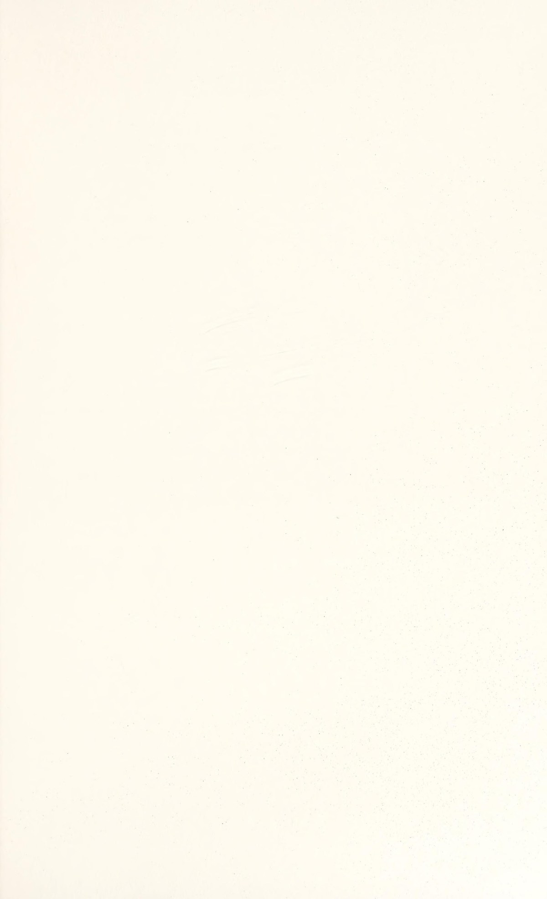

Phần I: Nghịch Lý Trận Đấu, Cuộc Chiến Bản Ngã & Cá Tính Của Các Nhà Vô Địch
Khám phá tâm lý học chiến thắng từ Tiến sĩ Allen Fox: Tại sao tay vợt có cú đánh đẹp hơn lại thường xuyên thất bại và bài học từ Connors, Borg, McEnroe
1. Nghịch Lý Quần Vợt: Bạn Có Thực Sự Muốn Thắng?
Cảnh tượng này diễn ra hàng ngày trên khắp các sân quần vợt thế giới:
Một tay vợt bước ra sân với bộ trang phục đắt tiền, những cú vung vợt đẹp như sách giáo khoa, thuận tay mượt mà và trái tay thanh thoát.
Đối thủ của anh ta là một kẻ đánh bóng vụng về, cầm cán vợt kỳ dị, chuyên cắt bóng xén xoáy và đẩy những quả bóng bổng lơ lửng khó chịu.
Ai nhìn vào cũng đinh ninh rằng tay vợt đánh bóng đẹp mắt sẽ nghiền nát đối thủ dễ dàng.
Thế nhưng hai giờ sau, kẻ thất trận rời sân trong sự cay đắng tủi nhục lại chính là "tay vợt chơi hay hơn", miệng không ngừng lẩm bẩm những lời bào chữa: "Hôm nay tôi đánh dưới sức", "Gió to quá", hay "Hắn ta chỉ biết đánh bóng rùa!".
Tiến sĩ Allen Fox — một tiến sĩ tâm lý học từ Đại học UCLA danh tiếng và từng năm lần lọt vào Top 10 tay vợt hàng đầu nước Mỹ — chỉ ra rằng:
Quần vợt không phải là một cuộc thi hoa hậu chấm điểm phong cách; quần vợt là một cuộc chiến sinh tử khốc liệt về mặt tâm lý giữa hai bản ngã (Ego).
Rất nhiều người chơi thích "đánh bóng đẹp" hơn là "giành chiến thắng".
Họ thà tung ra một cú đánh mạo hiểm đẹp mắt rồi đánh hỏng để có cớ an ủi rằng "mình dám chơi tấn công", còn hơn là phải cắn răng đánh bóng an toàn, kiên nhẫn chịu đựng gian khổ để đoạt từng điểm số xấu xí.
Muốn trở thành một kẻ chiến thắng thực thụ, bạn phải can đảm rũ bỏ sự phù phiếm của cái tôi và học cách yêu thích sự thực dụng tàn nhẫn của tỷ số trận đấu.
2. Tố Chất Cốt Tử Của Kẻ Chiến Thắng & Cá Tính Các Siêu Sao
Một nhà vô địch không được định nghĩa bởi những cú đánh ăn điểm thần sầu lúc đang dẫn trước bốn mươi-không; đẳng cấp của họ được bộc lộ trong những thời điểm họ đang chơi với phong độ tồi tệ nhất nhưng vẫn tìm ra con đường dẫn tới chiến thắng.
Tiến sĩ Fox phân tích ba phẩm chất tâm lý cốt tử:
Thứ nhất, Tính cạnh tranh hung bạo (Relentless Competitiveness): Kẻ chiến thắng ghét thất bại hơn là yêu chiến thắng. Nỗi đau của sự thất bại ám ảnh họ sâu sắc, thôi thúc họ chiến đấu đến giọt sức lực cuối cùng dù thể xác đang kiệt quệ.
Thứ hai, Sự tỉnh táo thực tế (Cold Realism): Họ không sống trong ảo tưởng về những cú đánh kỳ diệu; họ nhìn nhận trận đấu đúng như bản chất thực của nó và sẵn sàng thay đổi kế hoạch chiến thuật ngay lập tức để bẻ gãy nhịp độ của đối phương.
Bài học từ ba cá tính huyền thoại lớn nhất lịch sử:
Jimmy Connors: Biểu tượng của ngọn lửa cuồng nộ và sự hiếu chiến hoang dã. Connors bước vào sân đấu như một võ sĩ bước lên võ đài giác đấu La Mã. Ông biến từng đường bóng thành một mối thù cá nhân và sử dụng năng lượng thù hận để thiêu rụi mọi rào cản tâm lý của đối thủ.
Bjorn Borg: Đối cực hoàn hảo của Connors — "Tảng băng Bắc Âu". Borg giấu kín mọi cảm xúc đằng sau gương mặt vô cảm như tượng đá. Sự điềm tĩnh lạnh lùng của ông khiến đối phương rơi vào trạng thái tuyệt vọng vì cảm giác như đang đánh bóng vào một bức tường thành kiên cố không thể xuyên thủng.
John McEnroe: Thiên tài lập dị sở hữu cảm giác bóng ma thuật. McEnroe sử dụng những cơn thịnh nộ bùng phát với trọng tài như một công cụ kích hoạt adrenaline, đánh thức sự tập trung tột độ của bản thân đồng thời làm xáo trộn nhịp độ thi đấu của đối phương.

Phần II: Nỗi Sợ Thất Bại, Nỗi Sợ Chiến Thắng & Giải Phẫu Hiện Tượng Choking
Phân tích cơ chế tự hủy hoại tiềm thức khi dẫn điểm sâu, chiếc bẫy tự bào chữa và phương pháp tái lập độ sắc bén của vũ khí
3. Nỗi Sợ Thất Bại & Nỗi Sợ Chiến Thắng (The Fears That Paralyze)
Hầu hết mọi người đều nghĩ rằng các tay vợt chỉ sợ thua trận; nhưng dưới góc nhìn của một tiến sĩ tâm lý học, Allen Fox khẳng định rằng "Nỗi sợ chiến thắng" (The Fear of Winning) cũng có sức công phá hủy diệt không kém:
Khi một người chơi yếu hơn bất ngờ dẫn trước một hạt giống số một với tỷ số năm-hai ở ván đấu quyết định, tâm trí tiềm thức của anh ta bắt đầu bị rung chuyển dữ dội bởi sự hoảng loạn vô hình.
Những câu hỏi độc hại bắt đầu xuất hiện trong đầu: "Mình thực sự sắp đánh bại nhà vô địch sao?", "Mọi người sẽ kỳ vọng gì ở mình trong trận đấu tới?", "Liệu đây có phải chỉ là một sự may mắn ngẫu nhiên?".
Chiếc bẫy tự bào chữa (The Excuse Trap):
Nỗi sợ lớn nhất của bản ngã con người không phải là việc thua một trận đấu, mà là nỗi nhục nhã khi phải thừa nhận rằng mình kém cỏi hơn đối thủ sau khi đã dốc hết một trăm phần trăm sức lực.
Để bảo vệ lòng tự tôn mong manh đó, tiềm thức sẽ ngấm ngầm giở trò tự phá hoại: nó xui khiến người chơi thi đấu hời hợt, nổi nóng với trọng tài hoặc tung ra những cú đánh bừa bãi liều lĩnh.
Bằng cách đó, khi thua cuộc, người chơi có thể dễ dàng tự ru ngủ bản thân bằng lời bào chữa: "Tôi thua chỉ vì hôm nay tôi chán không buồn đánh", chứ không phải vì đối phương giỏi hơn tôi.
Bước đầu tiên để trở thành một nhà vô địch là dám từ bỏ mọi chiếc cớ bào chữa, chấp nhận đối diện trần trụi với khả năng thất bại và chiến đấu hết mình trong từng đường bóng.
4. Giải Phẫu Hiện Tượng Choking & Cách Hóa Giải (Breaking the Choke Cycle)
Hiện tượng "Nghẹn thở vì áp lực" (Choking) là bi kịch lớn nhất trong môn quần vợt: đó là khi bạn cảm thấy cánh tay mình bị đông cứng như đá, bàn tay ướt đẫm mồ hôi và không thể thực hiện được một cú đánh cơ bản nhất dù đã tập luyện hàng chục năm.
Tiến sĩ Fox giải mã cơ chế tâm lý của Choking:
Choking xảy ra khi sự chú ý của bạn chuyển dịch hoàn toàn từ ngoại tại (quỹ đạo của quả bóng, vị trí của đối thủ) sang nội tại (sự lo sợ, nhịp tim đập nhanh, kết quả điểm số sau trận đấu).
Khi bạn quá chú ý vào việc kiểm soát từng cơ bắp ở cánh tay, bạn đã vô tình tước đoạt quyền điều khiển tự động của tiểu não và hệ thần kinh cơ.
Ba bước phá vỡ vòng lặp Choking ngay trên sân đấu:
Bước một, Thừa nhận cảm giác lo âu thay vì chối bỏ nó: Hãy tự nhủ rằng lo lắng là phản xạ sinh lý hoàn toàn bình thường của mọi tay vợt, kể cả những nhà vô địch Grand Slam. Đừng cố gồng mình ép bản thân phải "bình tĩnh"; hãy chấp nhận nhịp tim đang đập nhanh như một nguồn năng lượng sẵn sàng hành động.
Bước hai, Hướng tiêu điểm vào các mục tiêu cụ thể bên ngoài: Thay vì nghĩ về tỷ số, hãy tập trung thị giác vào đường chỉ khâu của quả bóng nỉ đang bay tới, hoặc lắng nghe âm thanh giòn tan khi mặt vợt tiếp xúc bóng.
Bước ba, Duy trì biên độ vung vợt trọn vẹn: Khi sợ hãi, phản xạ tự nhiên của con người là rụt tay lại và "đẩy" bóng qua lưới. Hãy cưỡng lại phản xạ nguy hiểm này bằng cách vung vợt dứt khoát hết biên độ qua vai đối diện, để lực quán tính tự nhiên giải phóng năng lượng an toàn.
Phần III: Đập Tan Giáp Tâm Lý Đối Thủ & Nghệ Thuật Hóa Giải Đòn Tâm Lý Chiến
Chiến lược gieo mầm hoài nghi vào đầu đối phương, nhận diện các chiêu trò tiểu xảo Gamesmanship và bí quyết giữ vững sự bất khả xâm phạm
5. Đập Tan Tấm Giáp Tâm Lý Của Đối Thủ (Shattering the Armor)
Mỗi người chơi bước vào sân đấu đều tự trang bị cho mình một "tấm giáp tâm lý" vô hình — đó là niềm tin vào vũ khí sở trường và sự tự tin về đẳng cấp của bản thân.
Nhiệm vụ hàng đầu của bạn không chỉ là đánh bóng vào sân; nhiệm vụ của bạn là tìm ra vết nứt trên tấm giáp đó và gieo rắc mầm mống hoài nghi vào tâm trí đối phương.
Tiến sĩ Fox chỉ ra các chiến thuật tâm lý phá vỡ đối thủ:
Thứ nhất, Tấn công vào sự kiêu ngạo của đối phương: Nếu đối thủ bước vào trận đấu với tâm thế coi thường bạn, hãy kiên trì cắt những quả bóng thấp và lốp bóng bổng để kéo dài loạt bóng bền. Việc không thể dứt điểm ăn điểm ngay sẽ khiến sự kiêu ngạo của họ nhanh chóng biến thành nỗi ức chế và phẫn nộ tột độ.
Thứ hai, Tước đoạt cảm giác nhịp điệu: Đa số các tay vợt hiện đại thích đánh bóng ở tốc độ cao và điểm rơi cố định. Hãy phá vỡ nhịp điệu của họ bằng cách liên tục thay đổi tốc độ, đánh một quả bóng nặng xoáy rồi tiếp nối bằng một quả bóng mềm nhẹ không lực. Khi không thể tìm thấy nhịp điệu quen thuộc, cỗ máy kỹ thuật của họ sẽ tự động sụp đổ từ bên trong.
6. Hóa Giải Các Chiêu Trò Tâm Lý Chiến (Psyching & Gamesmanship)
Trong thi đấu thực tế, không phải đối thủ nào cũng cư xử như những quý ông lịch thiệp.
Bạn sẽ thường xuyên phải đối mặt với các đòn tâm lý chiến bẩn thỉu (Gamesmanship):
Chiêu trò câu giờ làm nguội nhịp độ (Stalling): Đối phương đi lại chậm chạp, lau mồ hôi liên tục hoặc giả vờ buộc lại dây giày khi bạn đang có chuỗi giao bóng thăng hoa.
Chiêu trò bắt bóng ngoài ăn gian (Bad Line Calls): Đối thủ cố tình hô bóng ngoài ở những quả bóng cắm sát vạch vôi trong các thời điểm nhạy cảm ba mươi-bốn mươi để chọc tức bạn.
Chiêu trò giả vờ chấn thương (Fake Injury): Đối thủ ôm chân nhăn nhó, đi khập khiễng để ru ngủ sự cảnh giác của bạn, rồi bất ngờ bứt tốc tung cú thuận tay ăn điểm ở pha tiếp theo.
Nguyên tắc phòng thủ thép của Tiến sĩ Fox:
Thứ nhất, Tuyệt đối không để cảm xúc bị kích động: Mọi chiêu trò của đối phương chỉ thành công khi bạn tỏ ra tức giận, tranh cãi hoặc mất tập trung. Khi đối thủ thấy bạn vẫn giữ gương mặt lạnh lùng và ánh mắt điềm nhiên, chính họ sẽ rơi vào trạng thái hoảng loạn vì đòn tiểu xảo bị vô hiệu hóa.
Thứ hai, Yêu cầu trọng tài can thiệp một cách văn minh: Nếu đối thủ liên tục ăn gian bóng ở các giải phong trào không có trọng tài, hãy bước lên lưới một cách lịch sự, nhìn thẳng vào mắt đối phương và nói rõ ràng: "Bạn bắt quả bóng vừa rồi hơi vội; từ điểm này trở đi, chúng ta hãy cùng kiểm tra dấu bóng rõ ràng nhé". Sự cương quyết và đàng hoàng sẽ tước đoạt sự tự tin của kẻ chơi xấu ngay tức khắc.
Phần IV: Tâm Lý Học Đánh Đôi, Quản Trị Năng Lượng & Triết Lý Chiến Thắng Đích Thực
Nghệ thuật giao tiếp nâng đỡ đồng đội trong đánh đôi, phương pháp thích ứng khi tuổi tác tăng dần và thông điệp vượt thời gian của Tiến sĩ Allen Fox
7. Động Lực Học Tâm Lý Trong Thi Đấu Đánh Đôi (The Psychodynamics of Doubles)
Thi đấu đánh đôi không đơn thuần là hai người chơi đơn đứng cạnh nhau trên cùng một phần sân; đánh đôi là một mối quan hệ cộng sinh tâm lý học phức tạp đòi hỏi sự thấu hiểu và nâng đỡ lẫn nhau.
Sai lầm phổ biến nhất trong đánh đôi là việc bạn phát ra các tín hiệu phi ngôn ngữ tiêu cực — như một cái liếc mắt chán nản, một tiếng thở dài ngao ngán hay cử chỉ buông thõng hai tay — mỗi khi người đồng đội đánh bóng hỏng.
Những phản ứng đó giáng một đòn chí mạng vào sự tự tin của bạn đánh cùng, biến đồng đội của bạn thành một gánh nặng tâm lý bị đông cứng vì sợ mắc thêm lỗi.
Nguyên tắc vàng của Tiến sĩ Fox trong đánh đôi:
Thứ nhất, Luôn là người tiếp thêm năng lượng tích cực: Sau mỗi pha bóng — bất kể thắng hay thua — hãy chủ động tiến lại gần, đập tay và nhìn thẳng vào mắt đồng đội với những lời khích lệ chân thành: "Không sao đâu, cú vung vợt rất tốt, quả sau mình sẽ làm lại!".
Thứ hai, Bảo vệ người đồng đội đang gặp khủng hoảng: Nếu bạn thấy đối phương liên tục nhắm vào người đồng đội đang bị cóng tay, hãy chủ động di chuyển áp sát lưới hơn để cắt các đường bóng của đối thủ, giảm bớt gánh nặng áp lực cho bạn cùng chơi.
8. Thích Ứng Khi Tuổi Tác Tăng Dần & Triết Lý Chiến Thắng Đích Thực
Quy luật tự nhiên của thời gian là điều không ai có thể cưỡng lại: khi bước qua tuổi bốn mươi hay năm mươi, tốc độ bứt tốc của đôi chân sẽ giảm dần và khả năng hồi phục thể lực sau mỗi loạt bóng bền dài hơi không còn như thời trai trẻ.
Nhiều tay vợt kỳ cựu rơi vào trạng thái thất vọng cay đắng vì cố gắng thi đấu theo lối chơi dùng sức của tuổi hai mươi.
Tiến sĩ Fox hướng dẫn phương pháp chuyển hóa tâm thức khi lớn tuổi:
Thay thế sức mạnh cơ bắp bằng trí tuệ chiến thuật: Hãy học cách đoán trước hướng bóng của đối thủ sớm hơn một nhịp dựa trên hướng vai và mặt vợt của họ, tối ưu hóa các góc đánh hiểm hóc thay vì cố gắng đập bóng với vận tốc tối đa.
Một cú cắt bóng thấp xoáy ngược hoặc một quả bỏ nhỏ tinh tế thường mang lại hiệu quả ăn điểm cao hơn nhiều so với một cú bạt bóng dùng hết sức bình sinh.
Lời kết của Tiến sĩ Allen Fox:
Chiến thắng trong môn quần vợt không phải là một món quà may mắn từ trên trời rơi xuống; chiến thắng là phần thưởng xứng đáng dành cho người dám nhìn thẳng vào những nhược điểm tâm lý của chính mình, dẹp bỏ sự kiêu ngạo phù phiếm và kiên cường vượt qua mọi nghịch cảnh trên sân đấu.